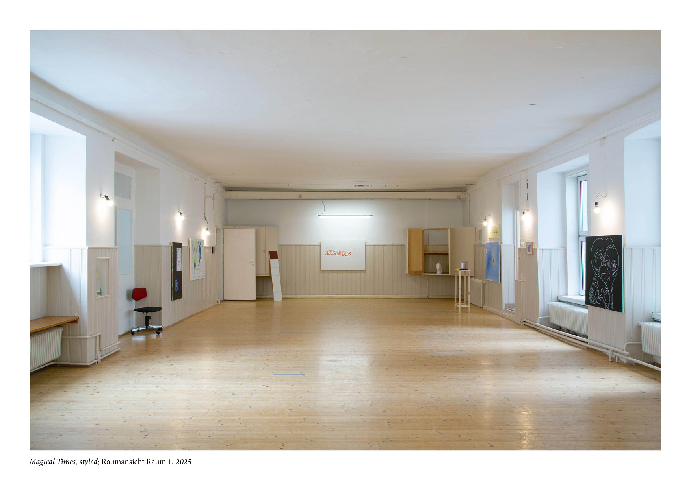

*1996 Wien, lebt in Wien und Klosterneuburg
Seit 2017 - Malerei und Animationsfilm Judith Eisler, Universität für Angewandte Kunst Wien
2024 - University of Newcastle, UK
2024/2025 - Klasse Maximiliane Baumgartner, Kunstakademie Düsseldorf
2025 - Klasse Skulptur und Raum Hans Schabus, Universität für Angewandte Kunst Wien
Projekte: H0pe Art Service Portfolio

© Lilith Ona
*1996 Vienna, lives in Vienna and Klosterneuburg
Since 2017 - Painting and Animation Film Judith Eisler, University of Applied Arts Vienna
2024 - University of Newcastle, UK
2024/2025 - Class Maximiliane Baumgartner, Düsseldorf Art Academy
2025 - Class Sculpture and Space Hans Schabus, University of Applied Arts Vienna
Projects: H0pe Art Service Portfolio
© Lilith Ona